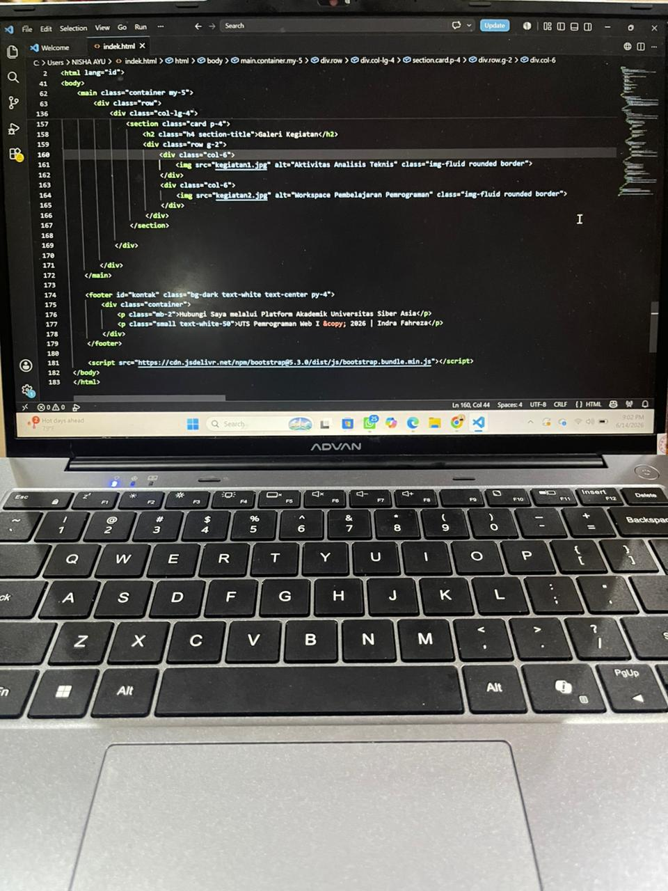
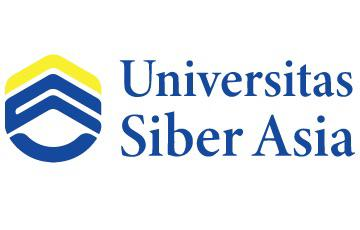

Mahasiswa S1 PJJ Informatika | Universitas Siber Asia
Saya adalah seorang mahasiswa program studi Informatika yang berdedikasi tinggi dan memiliki pemicu semangat besar di bidang teknologi dan pemrograman. Perjalanan saya di dunia IT didorong oleh rasa penasaran yang kuat tentang bagaimana sebuah perangkat lunak dapat diciptakan untuk menyelesaikan berbagai tantangan di dunia nyata. Melalui latar belakang akademik dan eksplorasi mandiri, saya aktif mempelajari fundamental pemrograman, struktur data, hingga pengembangan web. Saya adalah tipe pembelajar cepat yang adaptif, senang memecahkan masalah (problem-solving), dan selalu terbuka untuk menguasai berbagai tech stack serta metodologi baru.
Bagi pemula, bug atau eror di layar adalah musuh yang menyebalkan. Namun, bagi seorang profesional, eror adalah teka-teki yang menantang. Seorang profesional tidak melihat kode secara acak. Kamu akan belajar melihat gambaran besar: bagaimana struktur data yang efisien, bagaimana algoritma bekerja dengan performa maksimal, dan bagaimana menulis kode yang bersih (clean code) agar bisa dibaca oleh tim lain. Proses debugging adalah seni mengasah ketelitian—sama seperti seorang mekanik andal yang tahu persis letak getaran tidak stabil pada mesin hanya dengan mendengarkan suaranya.
| Jenjang Pendidikan | Nama Institusi | Tahun Pendidikan |
|---|---|---|
| S1 Informatika (PJJ) | Universitas Siber Asia NIM: 250401010471 |
2026 - Sekarang |
| Pendidikan Menengah (SMA/SMK) | SMKN 2 BANDAR LAMPUNG | 2021 |
| Posisi / Jabatan | Instansi / Perusahaan | Keterangan Tugas |
|---|---|---|
| Quality Control | PT SHINHEUNG INDONESIA | Mengawasi kelayakan produk dan memastikan proses operasional berjalan dengan standar mutu yang ditetapkan. |
| Magang / Internship | PT Bukit Asam Tbk (PTBA) | Mempelajari alur kerja operasional dan berkontribusi dalam mendukung aktivitas teknis di lapangan. |

